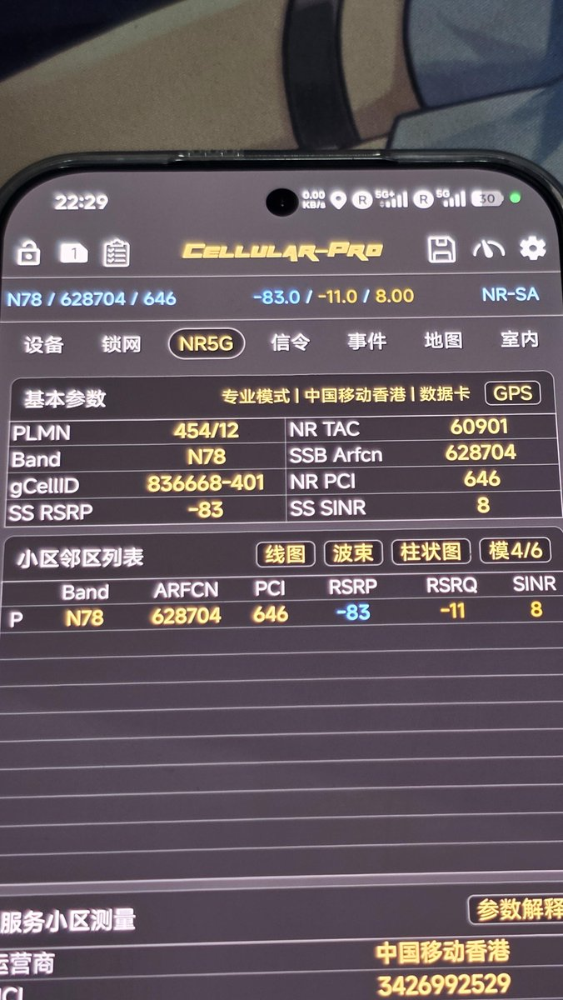
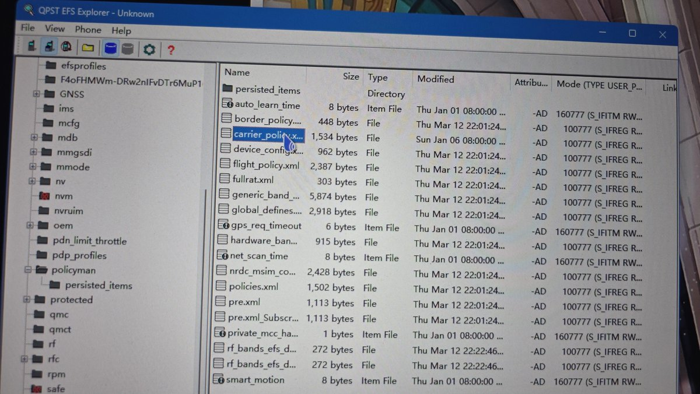
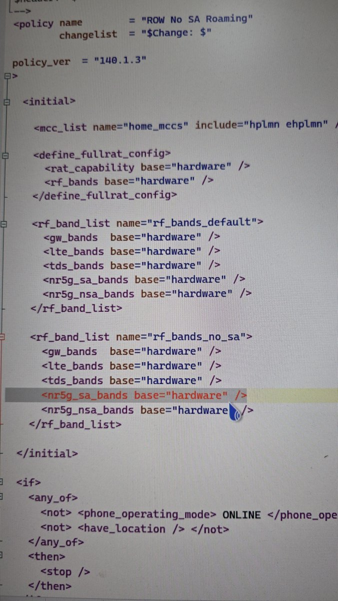

小米骁龙8Gen5机型（小米17系列、红米K90Pro）默认屏蔽SA漫游，尤其是使用中国移动香港（CMHK）和澳门电讯（CTM）卡在内地漫游的朋友，务必记得在解bl root之后做一件事。
打开调试端口（setprop sys.usb.config diag,adb），使用qpst的efs explorer找到图2所示的carrier_policy.xml，拷贝到桌面上打开修改，把图三所示所在行的“none”改成“hardware”（图三是已经改完的效果）。
感谢xhs用户lpxx50117提供的方法和配图。另外高通新机型5G信令是加密的，需要一次性license后解密，不然网络信号大师和Cellular Pro会没有SA网络的频段显示。
打开调试端口（setprop sys.usb.config diag,adb），使用qpst的efs explorer找到图2所示的carrier_policy.xml，拷贝到桌面上打开修改，把图三所示所在行的“none”改成“hardware”（图三是已经改完的效果）。
感谢xhs用户lpxx50117提供的方法和配图。另外高通新机型5G信令是加密的，需要一次性license后解密，不然网络信号大师和Cellular Pro会没有SA网络的频段显示。


